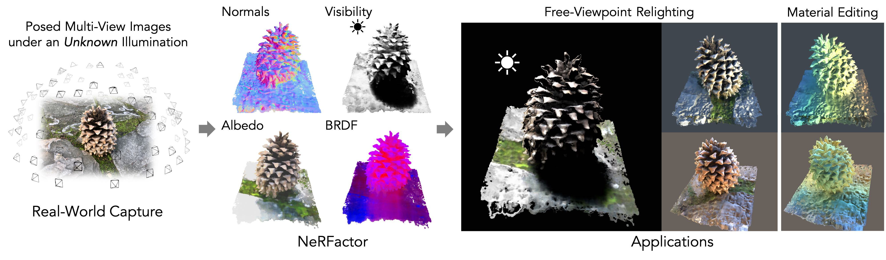

NeRFactor: Neural Factorization of Shape and Reflectance
Under
an Unknown Illumination
TOG 2021 (Proc. SIGGRAPH Asia)
Abstract
| We address the problem of recovering the shape and spatially-varying reflectance of an object from multi-view images (and their camera poses) of an object illuminated by one unknown lighting condition. This enables the rendering of novel views of the object under arbitrary environment lighting and editing of the object's material properties. The key to our approach, which we call Neural Radiance Factorization (NeRFactor), is to distill the volumetric geometry of a Neural Radiance Field (NeRF) [Mildenhall et al. 2020] representation of the object into a surface representation and then jointly refine the geometry while solving for the spatially-varying reflectance and environment lighting. Specifically, NeRFactor recovers 3D neural fields of surface normals, light visibility, albedo, and Bidirectional Reflectance Distribution Functions (BRDFs) without any supervision, using only a re-rendering loss, simple smoothness priors, and a data-driven BRDF prior learned from real-world BRDF measurements. By explicitly modeling light visibility, NeRFactor is able to separate shadows from albedo and synthesize realistic soft or hard shadows under arbitrary lighting conditions. NeRFactor is able to recover convincing 3D models for free-viewpoint relighting in this challenging and underconstrained capture setup for both synthetic and real scenes. Qualitative and quantitative experiments show that NeRFactor outperforms classic and deep learning-based state of the art across various tasks. Our videos, code, and data are available at xiuming.info/projects/nerfactor/. |
|
 |
|
Given a set of posed images of an object captured from multiple views under just one unknown illumination condition (left), Neural Radiance Factorization (NeRFactor) is able to factorize the scene into 3D neural fields of surface normals, light visibility, albedo, and material (center), which enables applications such as free-viewpoint relighting and material editing (right). |
Paper
NeRFactor: Neural Factorization of Shape and Reflectance Under an
Unknown Illumination
Xiuming Zhang,
Pratul P. Srinivasan, Boyang Deng,
Paul Debevec,
William T. Freeman,
Jonathan T. Barron
TOG 2021 (Proc. SIGGRAPH Asia)
arXiv /
Publisher /
BibTeX
v1 (12/22/2021)
Talk
v1 (12/22/2021)
Code
This GitHub repository includes code for:
- Data rendering and processing (so that you can render your own scenes or process your own captures);
- Model training and validation (so that you can modify the model and train it on your own data); and
- Model inference/testing (so that you can quickly try out our trained models).
Downloads
All subsequent folders and files are specified w.r.t. this Google Drive root.
If you want to try our trained models, see "Pre-Trained Models." If you want to use our rendered/processed data, see "Data." If you want to render your own data, also see "Metadata."
Pre-Trained Models (new as of 07/17/2022)
There are four types of pre-trained models in NeRFactor. The first is
the MERL BRDF model, which we release here. The second are the NeRF
models that generate the surfaces we start with. We are not releasing
these but you can train these NeRF models and then generate the surfaces
using our code. The third are the NeRFactor shape pre-training models
that learn to just reproduce the NeRF surfaces. We are not releasing
these but you can train them easily with our code. The fourth are the
final NeRFactor models (hotdog, ficus,
lego, and drums), which we release here. See
./pretrained_models.zip.
Data
We release the images rendered from the synthetic scenes above and the
real images (vasedeck and pinecone from NeRF)
processed to be compatible with our model's data format:
| Rendered Images | Real Images |
|---|---|
./rendered-images/ |
./real-images/ |
Metadata
We release the four .blend scenes (modified from what NeRF released):
lego, hotdog, ficus, and
drums, the training/testing light probes used in the paper,
and the training/validation/testing cameras (exactly the same as what
NeRF released):
| Scenes | Light Probes | Cameras |
|---|---|---|
./blender-scenes.zip |
./light-probes.zip |
./cameras.zip |
All Video Results
We release the video results of NeRFactor, its material editing, the NeRFactor variants used in our ablation studies, and Oxholm & Nishino [2014].
NeRFactor
Here are our results on all four synthetic scenes and two real captures:
lego_3072 |
hotdog_2163 |
drums_3072 |
ficus_2188 |
vasedeck |
pinecone |
Material Editing via NeRFactor
Here are our material editing results on all four synthetic scenes and two real captures:
lego_3072 |
hotdog_2163 |
drums_3072 |
ficus_2188 |
vasedeck |
pinecone |
Ablation Studies
Here are the NeRFactor variants' results on all four synthetic scenes.
Directly Using NeRF's Shape
This model variant fixes the shape to NeRF's, optimizing only the reflectance and illumination:
lego_3072 |
hotdog_2163 |
drums_3072 |
ficus_2188 |
No Smoothness Regularization
This model variant uses no smoothness regularization:
lego_3072 |
hotdog_2163 |
drums_3072 |
ficus_2188 |
Using Microfacet BRDFs
This model variant uses microfacet BRDFs instead of the learned BRDFs:
lego_3072 |
hotdog_2163 |
drums_3072 |
ficus_2188 |
No Geometry Pretraining
This model variant trains the surface normal and light visibility MLPs from scratch, together with the reflectance and lighting:
lego_3072 |
hotdog_2163 |
drums_3072 |
ficus_2188 |
Oxholm & Nishino [2014]
Here is how NeRFactor compares with an enhanced version of Oxholm & Nishino [2014] (implemented by ourselves due to the lack of the source code) on all four synthetic scenes:
lego_3072 |
hotdog_2163 |
drums_3072 |
ficus_2188 |
†Both this enhanced version and the original model require ground-truth lighting, which we provided.